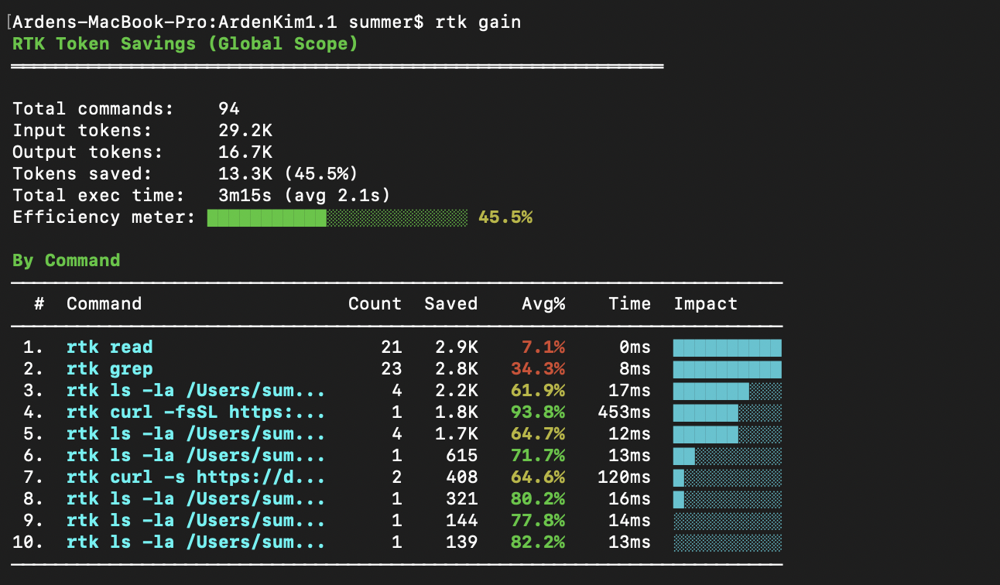
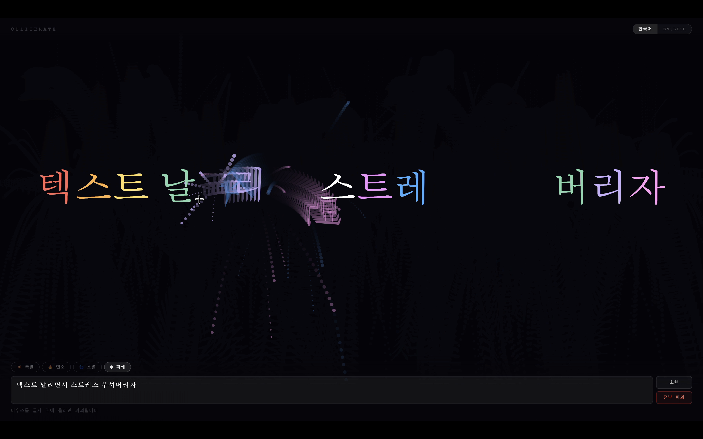
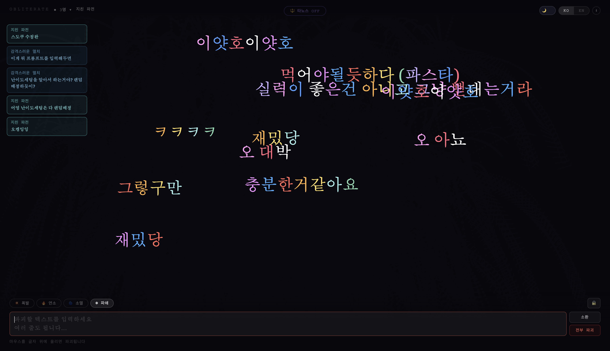
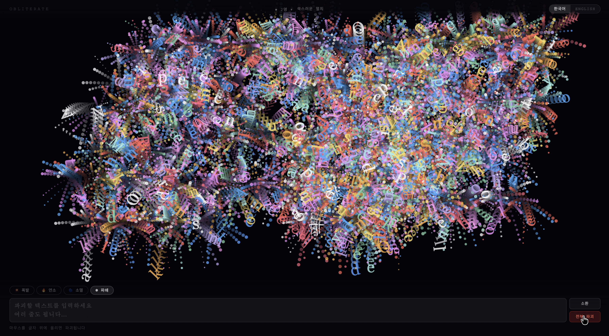
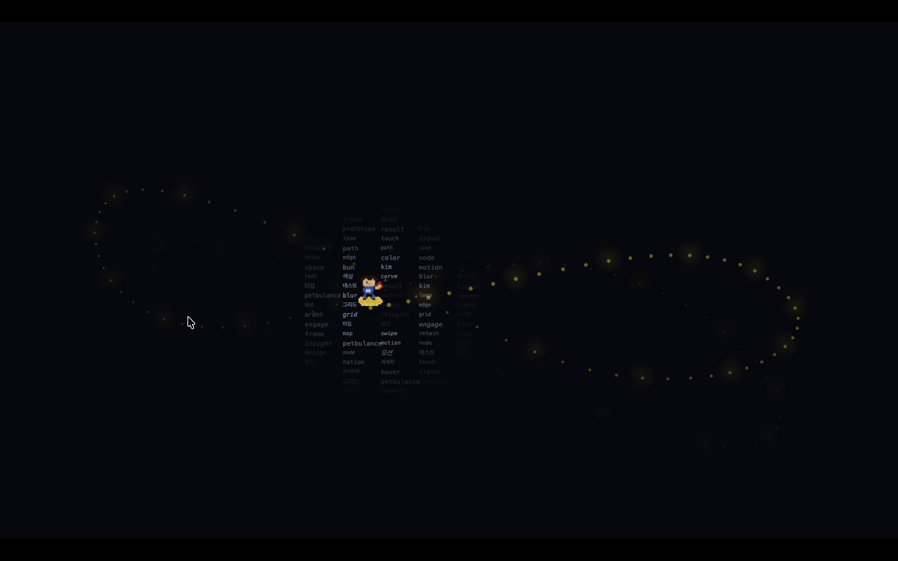
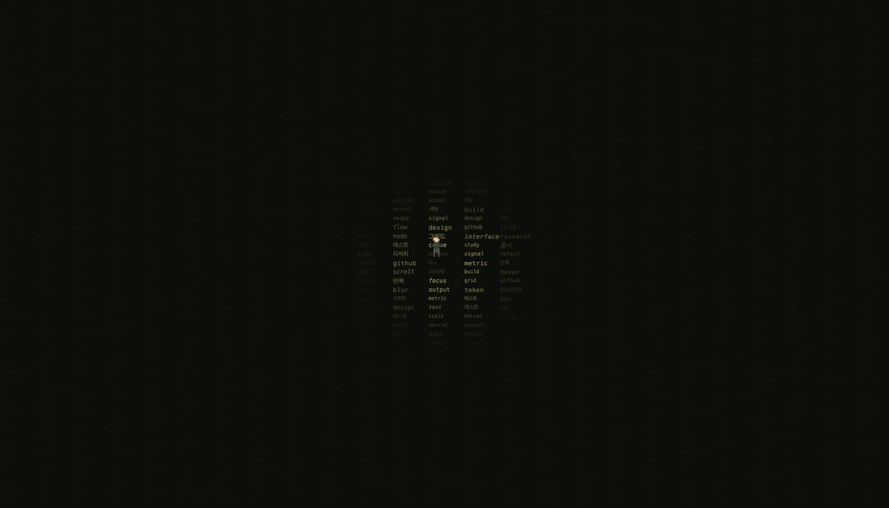

zero to one : AI
AI를 활용해 디자인 작업 및 1인 창업 효율성을 증대할 방법을 끊임없이 연구합니다. 떠오르는 아이디어를 빠르게 MVP/프로토타입으로 만들고 바이브코딩으로 배포/출시합니다. zero to one 프로세스의 전반에 대한 이해를 쌓는 동시에, 뭐든지 직접 사용하고 활용하고 만듭니다.
Solo Project
1인 기획, 디자인, 프롬프팅, 배포
✅ 기여도 100%
Period
2024.01 -
Tools
VSCode
Claude
Claude Code
Git, Github
Vercel
Nano Banana
RTK(Rust Token Killer)활용한 토큰 낭비 최소화
AI 에이전트는 생각보다 많은 토큰을 '읽는 것'에 쓴다. git status, 테스트 로그, ls 출력 — 이런 명령어 결과물이 컨텍스트를 조용히 잠식한다. 문제는 비용만이 아니다. 노이즈가 많은 컨텍스트는 모델이 핵심 실패 원인을 놓치게 만들고, 불필요한 줄에 어텐션을 낭비하게 한다.

RTK(Rust Token Killer)는 명령어와 에이전트 사이에서 출력을 필터링·압축해 정보 밀도 높은 컨텍스트만 전달하는 CLI 프록시다. "더 좋은 프롬프트"가 아니라 에이전트가 읽는 환경 자체를 바꾸는 접근이다. 실제 프로젝트에 적용한 결과, 94개 명령 기준 13.3K 토큰(45.5%) 절감을 확인했다.
pretext 기반 웹 창작
pretext(https://github.com/chenglou/pretext) fork해서 요리조리 만든 인터랙티브 웹 창작물
스트레스는 가라
입력한 텍스트를 클릭하거나 한번에 날리며 스트레스를 해소해보자. 친구 혹은 동료와 동시 접속해서 동시에 텍스트를 쓰면서 함께 날릴 수 있다.
Live ↗


지나간 흔적을 남기는 손오공
텍스트가 밭처럼 펼쳐진 공간 위를 자유롭게 날아다니는 근두운을 탄 손오공
Live ↗
어둠을 달리는 러너
끝없는 텍스트 세상을 달리는 러너 캐릭터
Live ↗
AI-only 협업 환경 구축
제품 구현 과정에서 개발 도메인 지식 부족으로 인한 커뮤니케이션 갭을 해결하기 위해 CTO 페르소나를 설계하여 GitHub, 로컬 파일과 연동해 전문 지식을 습득했습니다. 마케팅, PM, 개발 리드, 디자인 멘토 등 다양한 stakeholder 페르소나를 반복 설계하면서 프롬프트 엔지니어링을 통한 토큰 효율성 최적화에 집중했습니다. 최소 토큰으로 최대 인사이트를 확보하는 프롬프트 아키텍처를 구축하여 효율적인 cross-functional 협업 환경을 만들었습니다.


하루만에 Chrome 익스텐션 제작-배포하기
Claude Artifacts로 초기 아이디어를 구체화한 후 VSCode와 Claude Code를 활용해 UI/UX를 반복 개선하여 Chrome 확장프로그램을 하루만에 개발하고 승인받았습니다. 출시 후 실제 사용자 피드백을 바탕으로 다국어 지원 등을 추가하며 전체 프로덕트 라이프사이클을 경험했습니다.
Chrome 익스텐션 Live ↗
AI Persona를 활용한 IDI
잠재 유저 175명 서베이와 IDI를 기반으로 구축한 사용자 프로파일을 활용해 AI 페르소나를 생성하여 인뎁스 인터뷰를 진행했습니다. 실제 참가자 5명과 AI 페르소나의 답변을 종합해 UX 모델링에 필요한 유의미한 인사이트를 도출할 수 있었습니다. 특화 서비스의 경우 적합한 참가자 모집이 어려운데, 사용자 프로파일 기반 AI 페르소나가 리소스 제약 환경에서 효과적인 대안임을 확인했습니다.

토큰 최적화 프롬프팅 연구
효율적인 AI 협업을 위한 프롬프트 엔지니어링 연구를 진행하고 있습니다. 최소한의 토큰으로 최대 성능을 얻는 프롬프트 아키텍처 설계와 다양한 도메인별 페르소나 최적화를 통해 실무에서 활용 가능한 프롬프팅 방법론을 개발하고 있습니다.


성과
끊임없이 새로운 것을 익히고 활용해보는 것을 즐기는 성향 덕분에, 기획-디자인-개발-배포의 전 과정에 핵심적인 역할을 하는 협업 파트너로서 AI를 활용하는 능력을 입증했습니다. 리소스 제약 속에서 AI 페르소나로 리서치 대안을 찾는 문제 해결 능력, 24시간 만에 Chrome 익스텐션을 구현하고 배포/출시한 경험, 그리고 출시 후 사용자 피드백을 반영해 개선하는 iteration을 통해 전체 프로덕트 라이프사이클을 주도했습니다.